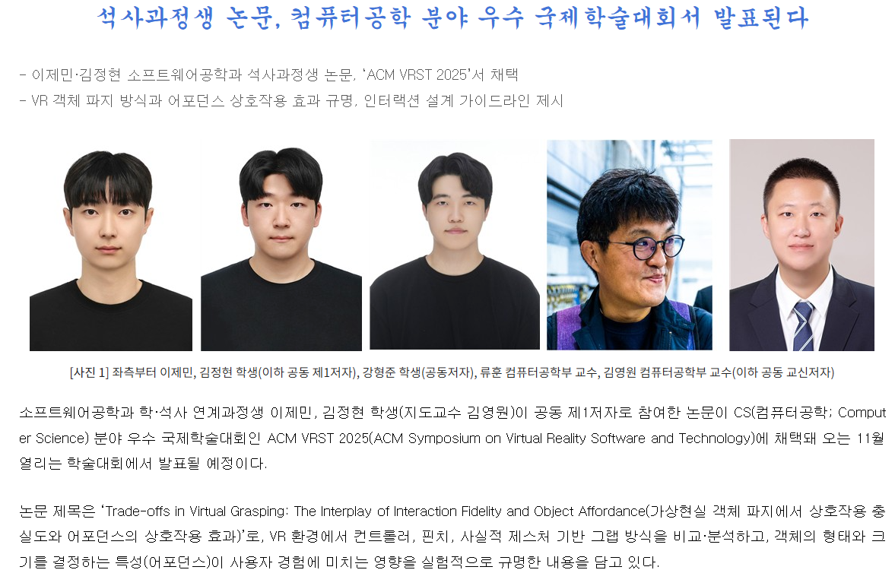
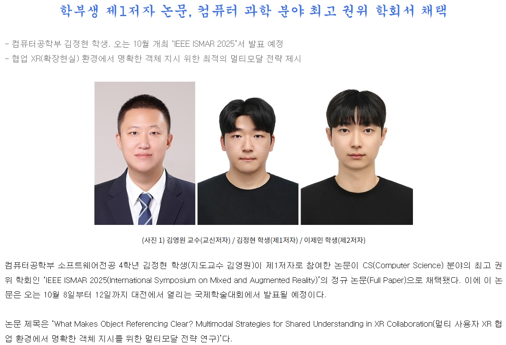

2026.4.24GrantWe have been selected for the RISE 2-Person-3-Leg Project -
"Integrated Operation Technology for Manufacturing-Logistics
Linked AI Smart Glasses"!
2026.4.24GrantWe have been selected for the "Development and Demonstration of
a Virtual Convergence Tourism Service for Gyeongju,
Gyeongsangbuk-do, based on 3D Spatial/Object Recognition and
Multimodal AI Convergence" project with the Korea Radio Promotion
Association (RAPA)!
2026.4.22GrantWe have been selected for the Ministry of SMEs and Startups'
2026 Startup-Leading University Support Program (University
Track)!
2026.3.13MemberJuyoung Lee has joined our lab. Welcome!
2026.3.13GrantWe have been selected for the NRF Young Investigator Research
Program (신진연구 A) with the project "Research on XR-Physical
AI-Based Human-Digital Twin Interaction for Expanding the Everyday
Perception of the Visually Impaired."
2025.11.25MemberDonghee Lee has joined our lab. Welcome!
2025.11.24GrantWe have been selected for the "AI-based facility anomaly
detection and predictive maintenance solution" project with the
Regional Innovation System & Education (RISE) Program!
2025.11.12ConfConducted a demo session titled "Multi-User VR Assembly Design:
Multimodal Object Modeling and High-Fidelity Gesture Interaction
with WebGL Integration" at ACM VRST 2025 (CS 우수 국제학술대회).
2025.11.12ConfGave a presentation at ACM VRST 2025 (CS 우수 국제학술대회),
presenting our paper "Trade-offs in Virtual Grasping: The
Interplay of Interaction Fidelity and Object Affordance" by Jemin
Lee.
2025.10.10ConfGave a presentation at IEEE ISMAR 2025 (CS 우수 국제학술대회),
presenting our paper "What Makes Object Referencing Clear?
Multimodal Strategies for Shared Understanding in XR
Collaboration." by Jeonghyeon Kim.
2025.9.14Paper
We have been accepted to present our paper, "Trade-offs in
Virtual Grasping: The Interplay of Interaction Fidelity and
Object Affordance" (Jemin Lee, Jeonghyeon Kim, Hyeongjun Kang,
Hoon Ryu, and Youngwon Kim), at a top-tier BK21 conference in
Computer Science, the ACM Symposium on Virtual Reality Software
and Technology (VRST) 2025 (Acceptance Rate: 27%).

Press coverage
2025.9.3PaperOur paper has been conditionally accepted to ACM Symposium on
Virtual Reality Software and Technology (VRST) 2025!
2025.8.5Paper
We have been accepted to present our paper, "What Makes Object
Referencing Clear? Multimodal Strategies for Shared
Understanding in XR Collaboration" (Jeonghyeon Kim, Jemin Lee,
and Youngwon Kim), at a top-tier BK21 conference in Computer
Science, IEEE ISMAR 2025 (Acceptance Rate: 21.1%). Excellent
work done by undergraduate students!

Press coverage
2025.5.21MemberTaewan Kim has joined our lab. Welcome!
2025.5.7PaperWe have been published in IEEE Access with our paper, "A
Head-Driven Algorithm for Estimating Upper and Lower Body Motion
in Virtual Reality Environments" (Jemin Lee, Jeonghyeon Kim, and
Youngwon Kim). Excellent work done by undergraduate
students!
2025.5.7GrantWe have been selected for the "Automated Reconstruction of Fire
Scenes and VR-based Immersive Investigation Technology" project
with the National Forensic Service!
2025.4.30PaperWe have been published in Sensors with our paper, "ITap: Index
Finger Tap Interaction by Gaze and Tabletop Integration"
(Jeonghyeon Kim, Jemin Lee, Jung-Hoon Ahn, and Youngwon
Kim).
2025.4.26ConfWe have attended CHI 2025 in Yokohama, Japan. Hopefully we will
be presenting in Barcelona next year :)
2025.4.15GrantWe have been selected for the "Digital Twin Linked ICT Technology
based Research" project with the Korea Electronics Technology
Institute (KETI)!
2025.3.30GrantWe have been selected for the "Development of a Traffic Accident
Video Analysis System" project with the Korea Insurance
Development Institute!
2025.3.6PaperWe have been published in Electronics with our paper, "Immersive
Interaction for Inclusive Virtual Reality Navigation: Enhancing
Accessibility for Socially Underprivileged Users" (Jeonghyeon Kim,
Jung-Hoon Ahn, and Youngwon Kim).
2025.1.1GrantWe have been selected for the "Digital Twin Linked ICT Technology
based Research" project with the Korea Electronics Technology
Institute (KETI)!
2024.9.10PaperWe have been published in the Journal of the Digital Content with
our paper, "In-XR Spread Interaction-Based Magnifying Display for
Users with Reduced Vision."
2024.9.10PaperWe have been published in the Journal of the Digital Content with
our paper, "User's Controller and Elbow-Based Calibration
Technique for Realistic Avatar Creation in an Extended Reality
Environment."
2024.7.22GrantWe have been selected for the "Large-Scale AI-based defense
product design and maintenance service demonstration
project"!
2024.7.8MemberHyeongjun Kang, Gu Kim, Jeonghyeon Kim and Junseok Im have joined
our lab. Welcome!
2024.6.1GrantWe have been selected for the "Spatial computing XR multimodal
interaction technology development project"!
2024.5.23MemberHyeongjun Kang, Gu Kim, Jeonghyeon Kim and Junseok Im have joined
our lab as Research Interns. Welcome!
2024.3.4MemberKikong Lee and Jemin Lee have joined our lab. Welcome!
2024.1.1LabExtended Reality (XR) & Metaverse Lab is now OPEN (Under
Construction)! We're currently recruiting passionate graduate
& undergraduate students!


.jpg)